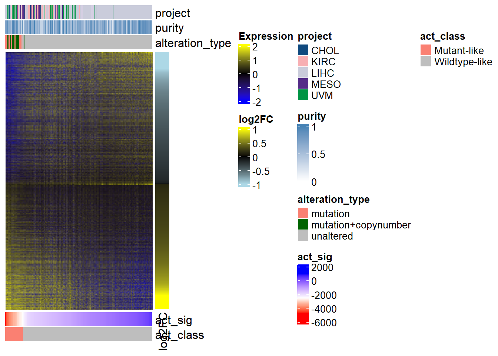

renv::activate() # Activate R environment if necessaryFigure code
Purpose
The purpose of this document is to both walk through the text and demonstrate reconstruction of the figures from our paper “Expanded detection and impact of BAP1 alterations in cancer”, available on bioRxiv at: https://www.biorxiv.org/content/10.1101/2023.11.21.568094v2
For more detailed intermediate analyses and data that can’t be hosted on Github, please see the associated Zenodo submission at: https://zenodo.org/doi/10.5281/zenodo.10175692
Figures
Note
Please note that some plots won’t display properly from the Quarto markdown – especially ComplexHeatmap plots. Generating the plots outside of the Quarto markdown environment should solve most visual issues. Plots were generated in R and finalized in Adobe Illustrator 2021.
This project uses an R environment from the renv package to capture package versions used in the analyses.
Figure 1 - Pan-cancer BAP1 variants in TCGA
Load the variant and per-sample annotation data. Please note that germline mutations are dbGaP controlled data and must be downloaded independently from the PanCanAtlas Publications page. If you don’t download these data separately, you will need to make a few changes to the code for it to run.
library(data.table)
variants_germline <- fread("../data/PanCanAtlas_Publications/PCA_pathVar_integrated_filtered_adjusted.tsv")
variants_germline <- variants_germline[variants_germline$HUGO_Symbol == "BAP1", ]
variants_germline$length <- variants_germline$Stop - variants_germline$Start + 1
variants <- read.delim("tables/table_s2a.txt")
variants_simple <- read.delim("tables/table_s2c.txt")
mc3 <- read.delim("tables/table_s2b.txt")
mc3_simple <- read.delim("tables/table_s2d.txt")
cohort_anno <- read.delim("tables/table_s3a.txt")
sample_anno <- read.delim("tables/table_s3b.txt")
# TCGA long and short cancer type IDs
tcga_projects <- unique(sample_anno$cohort)
tcga_names <- c()
for (i in tcga_projects) {
tcga_names <- c(tcga_names, strsplit(i, "-")[[1]][2])
}
# Standard cancer type colors for plots
tcga_colors <- read.delim("../data/tcga_colors.txt")The first numbers referenced in the results text are:
Out of 10,414 samples and 33 cancer types, a total of 1337 non-synonymous, non-intronic variants (1329 somatic and 8 germline) were detected in 988 individuals across the two updated hg38-aligned approaches, including 14 indels >=40bp in length (Supplemental Table S2A).
All variants here are nonsynonymous, non-intronic variants which have passed individual variant caller quality checks (FILTER flag == “PASS” or GDC_FILTER == ““).
num_germline_variants <- nrow(variants_germline)
# If you don't have germline data access, there are 8 germline BAP1 variants
# num_germline_variants <- 8
num_variants <- nrow(variants) + num_germline_variants
num_germline_mutants <- length(unique(variants_germline$bcr_patient_barcode)) -
sum(variants_germline$bcr_patient_barcode %in% variants$SAMPLE)
# If you don't have germline data, there is a 1-sample overlap = 7 mutant samples
# num_germline_mutants <- 7
num_mutants <- length(unique(variants$SAMPLE)) + num_germline_mutants
num_germline_40bpindels <- sum(variants_germline$length >= 40)
# If you don't have germline data, there are 0 >=40bp indels
# num_germline_40bpindels <- 0
num_40bpindels <- sum(variants$length >= 40) + num_germline_40bpindels
cat(sprintf("# nonsynonymous, non-intronic variants passing simple filtering: %s",
num_variants), "\n")# nonsynonymous, non-intronic variants passing simple filtering: 1337 cat(sprintf("# mutant samples passing simple filtering: %s",
num_mutants), "\n")# mutant samples passing simple filtering: 988 cat(sprintf("# indels >=40bp passing simple filtering: %s",
num_40bpindels), "\n")# indels >=40bp passing simple filtering: 14 Next we performed additional filtering to identify variant calls with greater support:
We conducted further review of variants to select those with greater support (tumor variant allele frequency ≥0.2, tumor alternate allele read count ≥2, and manual review of read alignment in IGV), resulting in a reduction from 1337 to 265 variants in 233 individuals across TCGA cancer types, including 11 larger indels ≥40bp that were not previously detected (Figure 1A-B and Supplemental Table S2C).
# All germline variants pass simple filtering
# all(variants_germline$tumorVAF >= 0.2)
# [1] TRUE
# all(variants_germline$tumorAltCnt >= 2)
# [1] TRUE
num_simple_variants <- nrow(variants_simple) + num_germline_variants
num_simple_mutants <- length(unique(variants_simple$SAMPLE)) + num_germline_mutants
num_simple_40bpindels <- sum(variants_simple$length >= 40) + num_germline_40bpindels
cat(sprintf("# nonsynonymous, non-intronic variants passing simple filtering: %s",
num_simple_variants), "\n")# nonsynonymous, non-intronic variants passing simple filtering: 265 cat(sprintf("# mutant samples passing simple filtering: %s",
num_simple_mutants), "\n")# mutant samples passing simple filtering: 233 cat(sprintf("# indels >=40bp passing simple filtering: %s",
num_simple_40bpindels), "\n")# indels >=40bp passing simple filtering: 11 Figure 1A
This figure was made with screen captures from Integrative Genomics Viewer (IGV) views of the BAP1 gene locus near exon 5 for the TCGA-FV-A3I0 sample. Image was finalized in Adobe Illustrator 2021.
Figure 1B
This is a summarization of the number of variants in a schematic created by BioRender.com (https://www.biorender.com/).
We then compare to the historical MC3 variant calls with simple filtering:
This earlier pipeline resulted in the detection of 251 variants from 224 individuals, of which 190 variants from 170 individuals similarly passed simple call quality filtering, none of which were ≥40bp (Supplemental Figure S1 and Supplemental Table S2B and S2D).
num_mc3 <- nrow(mc3) + num_germline_variants
num_mc3_mutants <- length(unique(mc3$SAMPLE)) + num_germline_mutants
num_mc3_40bpindels <- sum(mc3$length >= 40) + num_germline_40bpindels
cat(sprintf("# MC3 nonsynonymous, non-intronic variants passing simple filtering: %s", num_mc3), "\n")# MC3 nonsynonymous, non-intronic variants passing simple filtering: 251 cat(sprintf("# MC3 mutant samples passing simple filtering: %s",
num_mc3_mutants), "\n")# MC3 mutant samples passing simple filtering: 224 cat(sprintf("# MC3 indels >=40bp passing simple filtering: %s",
num_mc3_40bpindels), "\n")# MC3 indels >=40bp passing simple filtering: 0 num_mc3_simple <- nrow(mc3_simple) + num_germline_variants
num_mc3_simple_mutants <- length(unique(mc3_simple$SAMPLE)) + num_germline_mutants
num_mc3_simple_40bpindels <- sum(mc3_simple$length >= 40) + num_germline_40bpindels
cat(sprintf("# MC3 nonsynonymous, non-intronic variants passing simple filtering: %s", num_mc3_simple), "\n")# MC3 nonsynonymous, non-intronic variants passing simple filtering: 190 cat(sprintf("# MC3 mutant samples passing simple filtering: %s",
num_mc3_simple_mutants), "\n")# MC3 mutant samples passing simple filtering: 170 cat(sprintf("# MC3 indels >=40bp passing simple filtering: %s",
num_mc3_simple_40bpindels), "\n")# MC3 indels >=40bp passing simple filtering: 0 Supplemental Figure S1
This is a supplemental supporting figure for figure 1. Image was finalized in Adobe Illustrator 2021.
boxplot(mc3_simple$length,
variants_simple$length,
outline = FALSE,
ylim = c(0, max(variants_simple$length)),
names = c("TCGA MC3", "New"),
ylab = "Variant length (bp)")
points(jitter(rep(1, nrow(mc3_simple))),
mc3_simple$length,
pch = 16)
points(jitter(rep(2, nrow(variants_simple))),
variants_simple$length,
pch = 16)
abline(h = 40, lty = "dotted", col = "darkgrey") #40bp thresholdWe want to have a reasonable idea of whether there are shared variant calls across the new and historical data. Although there is a complication from hg19 vs. hg38 alignment, we can say that a variant is shared if both the variant allele and the sample ID are identical.
Of the 182 somatic variants in MC3, 77 (30%) were new calls and the remaining 180 were concordant (Figure 1C).
shared <- c()
shared_rownum <- c()
for (i in 1:nrow(variants_simple)) {
compare_id <- variants_simple$SAMPLE[i]
if (compare_id %in% mc3_simple$SAMPLE) {
if (variants_simple$variant_allele[i] %in%
mc3_simple$variant_allele[mc3_simple$SAMPLE == compare_id]) {
shared <- c(shared, compare_id)
shared_rownum <- c(shared_rownum, i)
}
}
}
num_shared_variants <- length(shared)
num_new_unique <- nrow(variants_simple) - num_shared_variants
percent_new_unique <- paste0(round((num_new_unique / nrow(variants_simple)) * 100,
2), "%")
cat(sprintf("# new variant calls: %s (%s)",
num_new_unique, percent_new_unique), "\n")# new variant calls: 77 (29.96%) cat(sprintf("# shared variant calls between new and MC3: %s",
num_shared_variants), "\n")# shared variant calls between new and MC3: 180 We can also pull up the details for the 1 variant in MC3 that was not detected (or detected differently) in the new variant call dataset:
All MC3 variants and mutant samples were captured in the new approach, except one variant, a 5bp deletion in KIRP sample TCGA-2Z-A9JD (Supplemental Tables S2C and S2D). However, our realignment approach detected two single-nucleotide variants (deletion and missense) in the similar region[…]
data.frame(rbind(mc3_simple[mc3_simple$SAMPLE == "TCGA-2Z-A9JD",
c("Start_Position", "End_Position",
"variant_allele", "Variant_Classification")],
variants_simple[variants_simple$SAMPLE == "TCGA-2Z-A9JD",
c("Start_Position", "End_Position",
"variant_allele", "Variant_Classification")]),
row.names = c("MC3_variant", "New_variant1", "New_variant2")) Start_Position End_Position variant_allele Variant_Classification
MC3_variant 52437652 52437657 AAAGG Frame_Shift_Del
New_variant1 52403636 52403636 - Frame_Shift_Del
New_variant2 52403641 52403641 G Missense_MutationFigure 1C
Here we plot % representation of variant classifications among mutatations ordered from highest to lowest, with numbers above their respective bars. If there were no variants of a particular classification, the classification was not included. Image below was finalized in Adobe Illustrator 2021.
new_ids <- variants_simple$SAMPLE[-shared_rownum]
variant_df <- table(variants_simple$Variant_Classification, variants_simple$SAMPLE %in% shared)
colnames(variant_df) <- c("New calls", "TCGA MC3 calls")
variant_df <- variant_df[order(rowSums(variant_df), decreasing = TRUE),
c("TCGA MC3 calls", "New calls")]
rownames(variant_df) <- gsub("_", " ", rownames(variant_df))
num_variants <- length(new_ids) + length(shared)
# Plotting % representation of variants split by old/shared vs new-unique calls
# Numbers indicated on top
par(mar = c(8, 4, 4, 2))
class_barplot <- barplot(t(variant_df) * (100/num_variants),
las = 2,
cex.names = 0.7,
ylab = "% of total somatic variants",
col = c("grey", "steelblue"),
xlim = c(0, 10), ylim = c(0, 50),
width = rep(0.5, 10))
plot_labs <- paste0("n=", colSums(t(variant_df)))
text(x = class_barplot, y = sort(colSums(t(variant_df) * (100/num_variants)),
decreasing = TRUE),
label = plot_labs,
pos = 3, cex = 0.8, col = "black", offset = 0.7)From the text:
The majority of BAP1 somatic variants were missense mutations (110/257, 42.8%), followed by deleterious nonsense and frameshift events (94/257, 36.6%, Figure 1C and Supplemental Table S2C).
num_nonsense_frameshift <- sum(variants_simple$Variant_Classification %in%
c("Nonsense_Mutation", "Frame_Shift_Del",
"Frame_Shift_Ins"))
percent_nonsense_frameshift <- round((num_nonsense_frameshift / nrow(variants_simple)) * 100, 1)
num_missense <- sum(variants_simple$Variant_Classification == "Missense_Mutation")
percent_missense <- round((num_missense / nrow(variants_simple)) * 100, 1)
cat(sprintf("# missense variants: %s (%s)",
num_missense, paste0(percent_missense, "%")), "\n")# missense variants: 110 (42.8%) cat(sprintf("# nonsense and frameshift variants: %s (%s)",
num_nonsense_frameshift, paste0(percent_nonsense_frameshift, "%")), "\n")# nonsense and frameshift variants: 94 (36.6%) Of the cancer types represented in TCGA, 21/33 (63.6%) have at least one BAP1 mutant sample (Figure 1C). Only three tumor types had >5% mutation frequency: uveal melanoma (UVM), malignant mesothelioma (MESO), and cholangiocarcinoma (CHOL) (Supplemental Table S3A).
num_mutant_cohorts <- length(unique(variants_simple$Cancer_Type))
percent_mutant_cohorts <- round(num_mutant_cohorts / length(tcga_projects) * 100, 1)
types_5freq <- cohort_anno$Cohort[(cohort_anno$Mutation.only + cohort_anno$Mutation.Copynumber) /
cohort_anno$Cohort.size > 0.05]
cat(sprintf("# cancer types with mutant samples: %s (%s)",
num_mutant_cohorts, paste0(percent_mutant_cohorts, "%")), "\n")# cancer types with mutant samples: 21 (63.6%) cat(sprintf("Cancer types with >5 percent mutation frequency: %s",
paste(types_5freq, collapse = ", ")), "\n")Cancer types with >5 percent mutation frequency: KIRC, CHOL, MESO, UVM, UCEC, LIHC Figure 1D
Here we plot % mutant samples per cohort ordered from highest to lowest, with numbers above their respective bars. If there were no mutations, the cohort was not included. Image below was finalized in Adobe Illustrator 2021.
num_mutant <- c()
percent_mutant <- c()
for (i in tcga_projects) {
n_mut <- sum(grepl("mutation", sample_anno$alteration_type[sample_anno$cohort == i]),
na.rm = TRUE)
n_cohort <- sum(sample_anno$cohort == i)
num_mutant <- c(num_mutant, n_mut)
percent_mutant <- c(percent_mutant, (n_mut/n_cohort)*100)
}
names(num_mutant) <- tcga_names
names(percent_mutant) <- tcga_names
# Remove cancer types which have 0 mutant samples
num_mutant <- num_mutant[num_mutant != 0]
percent_mutant <- percent_mutant[percent_mutant != 0]
tcga_col <- tcga_colors$Hex.Colors
names(tcga_col) <- tcga_colors$Study.Abbreviation
par(mar = c(8, 4, 4, 2))
mut_barplot <- barplot(sort(percent_mutant, decreasing = TRUE),
las = 2,
cex.names = 0.7,
col = tcga_col[names(sort(percent_mutant, decreasing = TRUE))],
names.arg = names(sort(percent_mutant, decreasing = TRUE)),
ylab = "% cohort with BAP1 mutation",
ylim = c(0, 50))
plot_labs <- paste0("n=", num_mutant[order(percent_mutant, decreasing = TRUE)])
text(x = mut_barplot,
y = sort(percent_mutant, decreasing = TRUE),
label = plot_labs,
pos = 3,
cex = 0.8)
Next from the text:
Somatic variants were broadly distributed across the length of the gene with no significant difference in protein-level domain representation for missense versus other mutation types (two-sided Fisher’s exact test p=0.1) (Figure 1E and Supplemental Table S2C).
# Annotated BAP1 domains from Haugh et al. (JAMA 2017), Figure 4
uch <- 1:240
bard1 <- 182:365
hbm <- 363:366
brca1 <- 594:657
nls <- c(656:661, 717:722)
# Find overlap of protein positions and annotated domains
for (i in 1:nrow(variants_simple)) {
protein_position <- variants_simple$Protein_position[i]
if (protein_position == "") {
variants_simple$domain[i] <- NA
}
else {
protein_position <- strsplit(protein_position, "/")[[1]][1]
if (grepl("-", protein_position)) {
propos1 <- strsplit(protein_position, "-")[[1]][1]
propos2 <- strsplit(protein_position, "-")[[1]][2]
propos1 <- ifelse(propos1 == "?", propos2, propos1)
propos2 <- ifelse(propos2 == "?", propos1, propos2)
protein_position <- as.numeric(propos1:propos2)
}
variants_simple$domain[i] <-
ifelse(any(protein_position %in% uch) &
any(protein_position %in% bard1), "UCH+BARD1",
ifelse(any(protein_position %in% uch), "UCH",
ifelse(any(protein_position %in% bard1) &
any(protein_position %in% hbm), "BARD1+HBM",
ifelse(any(protein_position %in% bard1), "BARD1",
ifelse(any(protein_position %in% hbm), "HBM",
ifelse(any(protein_position %in% brca1) &
any(protein_position %in% nls), "BRCA1+NLS",
ifelse(any(protein_position %in% brca1), "BRCA1",
ifelse(any(protein_position %in% nls), "NLS", "Other"))))))))
}
}
table(variants_simple$domain, variants_simple$Mutation_Type)
Missense_Mutation Other_Mutation
BARD1 12 20
BARD1+HBM 1 0
BRCA1 4 9
BRCA1+NLS 1 0
NLS 2 2
Other 28 45
UCH 46 37
UCH+BARD1 16 11variants_fisher <- fisher.test(table(variants_simple$domain, variants_simple$Mutation_Type))
cat(sprintf("Two-sided Fisher's exact test p=%s",
round(variants_fisher$p.value, 2)))Two-sided Fisher's exact test p=0.1We observed 161/257 (62.6%) variants occurred at an annotated functional domain with 110/257 (42.8%) occurring at the catalytic UCH domain (Figure 1E and Supplemental Table S2C).
num_functional <- sum(variants_simple$domain != "Other", na.rm = TRUE)
percent_functional <- paste0(round((num_functional / nrow(variants_simple)) * 100, 1), "%")
num_uch <- sum(variants_simple$domain %in% c("UCH", "UCH+BARD1"))
percent_uch <- paste0(round((num_uch / nrow(variants_simple)) * 100, 1), "%")
cat(sprintf("# variants occurring at functional domain: %s (%s)",
num_functional, percent_functional), "\n")# variants occurring at functional domain: 161 (62.6%) cat(sprintf("# variants occurring at UCH domain: %s (%s)",
num_uch, percent_uch), "\n")# variants occurring at UCH domain: 110 (42.8%) Figure 1E
This figure was made outside of R by exporting the 265 variant calls into a readable format for the cBioPortal MutationMapper (https://www.cbioportal.org/mutation_mapper). Please note that GRCh38 is the reference genome to use for this dataset. Image was adapted from cBioPortal and finalized in Adobe Illustrator 2021, coloring to just show missense vs. other mutations.
cbio <- variants_simple[, c("SAMPLE", "Chromosome",
"Start_Position", "End_Position", "Hugo_Symbol",
"Mutation_Type", "Reference_Allele", "variant_allele",
"Cancer_Type")]
cbio_germline <- variants_germline[, c("bcr_patient_barcode", "Chromosome",
"Start", "Stop", "HUGO_Symbol",
"Variant_Classification",
"Reference","Alternate", "cancer")]
cbio_germline$Chromosome <- paste0("chr", cbio_germline$Chromosome)
cbio_germline$Variant_Classification <- "Other_Mutation"
colnames(cbio_germline) <- c("SAMPLE", "Chromosome", "Start_Position",
"End_Position","Hugo_Symbol", "Mutation_Type",
"Reference_Allele","variant_allele", "Cancer_Type")
cbio <- rbind(cbio, cbio_germline)
colnames(cbio) <- c("Sample_ID", "Chromosome", "Start_Position",
"End_Position", "Hugo_Symbol", "Mutation_Type",
"Reference_Allele", "Variant_Allele", "Cancer_Type")
# write.table(cbio, file = "cbio_import.txt", sep = "\t", row.names = FALSE, quote = FALSE)Figure 2 - Pan-cancer BAP1 copy number loss and alterations
Here we turn to looking at the contribution of gene-level BAP1 copy number loss across TCGA.
BAP1 CN loss was observed in 1547 samples and estimated at single copy loss in 99% of all samples with CN loss (Table S3A-B)
num_copynumber <- sum(grepl("copynumber", sample_anno$alteration_type))
percent_heterozygous_loss <- paste0(round(sum(sample_anno$copynumber_absolute_bap1 == 1, na.rm = TRUE) / num_copynumber * 100, 1), "%")
cat(sprintf("# of samples with copy number loss: %s", num_copynumber), "\n")# of samples with copy number loss: 1547 cat(sprintf("Percent heterozygous loss of all CN loss: %s", percent_heterozygous_loss), "\n")Percent heterozygous loss of all CN loss: 99% Gene-level CN loss occurs frequently (>30% of samples) in KIRC, UVM, CHOL, MESO, LIHC, lung squamous cell carcinoma (LUSC), and head and neck squamous cancers (HNSC) (Figure 2A and Table S3A).
types_30freq <- cohort_anno$Cohort[(cohort_anno$Copynumber.only +
cohort_anno$Mutation.Copynumber) / cohort_anno$Cohort.size > 0.3]
cat(sprintf("Cancer types with >30 percent gene-level CN loss: %s",
paste(types_30freq, collapse = ", ")), "\n")Cancer types with >30 percent gene-level CN loss: KIRC, CHOL, MESO, UVM, LUSC, HNSC Figure 2A, right
Plotgardener is a highly customizable R package for generating figures, especially those featuring genomic data. The goal for this panel was to show average segment widths associated with BAP1 copy number loss in order to understand spatially how much of the chromosome 3p arm was lost in cases of loss. We also annotate other important tumor suppressors co-located on chromosome 3p. This may not display properly in the Quarto markdown preview. Image was finalized in Adobe Illustrator 2021.
library(plotgardener)
library(org.Hs.eg.db)
library(TxDb.Hsapiens.UCSC.hg38.knownGene)
library(AnnotationHub)
library(annotables)
chr3_length <- 198295559
bap1_start <- grch38$start[grch38$symbol == "BAP1"]
bap1_end <- grch38$end[grch38$symbol == "BAP1"]
bap1_length <- bap1_end - bap1_start + 1
pbrm1_start <- grch38$start[grch38$symbol == "PBRM1"]
pbrm1_end <- grch38$end[grch38$symbol == "PBRM1"]
setd2_start <- grch38$start[grch38$symbol == "SETD2"]
setd2_end <- grch38$end[grch38$symbol == "SETD2"]
vhl_start <- grch38$start[grch38$symbol == "VHL"]
vhl_end <- grch38$end[grch38$symbol == "VHL"]
pageCreate(width = 6, height = 8, default.units = "inches")
plotIdeogram(chrom = "chr3", assembly = "hg38",
x = 1, y = 0.5, width = 3.25, height = 0.15,
just = c("left", "top"), default.units = "inches")
plotText(label = "Chromosome 3",
fontsize = 8, fontcolor = "black", x = 4.25, y = 0.4,
just = "right", default.units = "inches")
plotText(label = "BAP1 locus",
fontsize = 8, fontcolor = "black", x = 1 + (bap1_start/chr3_length)*3.25, y = 0.1,
just = "center", default.units = "inches")
plotSegments(x0 = 1 + (bap1_start/chr3_length)*3.25, x1 = 1 + (bap1_end/chr3_length)*3.25,
y0 = 0.25, y1 = 0.7, lwd = 1, linecolor = "red")
plotText(label = "PBRM1 locus",
fontsize = 8, fontcolor = "black", x = 1 + (pbrm1_start/chr3_length)*3.25, y = 0.1,
just = "center", default.units = "inches")
plotSegments(x0 = 1 + (pbrm1_start/chr3_length)*3.25, x1 = 1 + (pbrm1_end/chr3_length)*3.25,
y0 = 0.25, y1 = 0.7, lwd = 1, linecolor = "grey")
plotText(label = "SETD2 locus",
fontsize = 8, fontcolor = "black", x = 1 + (setd2_start/chr3_length)*3.25, y = 0.1,
just = "center", default.units = "inches")
plotSegments(x0 = 1 + (setd2_start/chr3_length)*3.25, x1 = 1 + (setd2_end/chr3_length)*3.25,
y0 = 0.25, y1 = 0.7, lwd = 1, linecolor = "grey")
plotText(label = "VHL locus",
fontsize = 8, fontcolor = "black", x = 1 + (vhl_start/chr3_length)*3.25, y = 0.1,
just = "center", default.units = "inches")
plotSegments(x0 = 1 + (vhl_start/chr3_length)*3.25, x1 = 1 + (vhl_end/chr3_length)*3.25,
y0 = 0.25, y1 = 0.7, lwd = 1, linecolor = "grey")
j <- 0.75 # this is an iterator variable for positioning plot elements
mean_seg_start_list <- c()
for (i in tcga_projects[!tcga_projects %in% c("TCGA-THCA", "TCGA-TGCT")]) {
loc <- as.character(na.omit(sample_anno$bap1_segment_location[sample_anno$cohort == i &
sample_anno$copynumber_absolute_bap1 < 2]))
if (length(loc) > 0) {
mean_seg_start <- c()
mean_seg_end <- c()
for (k in loc) {
mean_seg_start <- c(mean_seg_start,
as.numeric(strsplit(strsplit(k, ":")[[1]][2], "-")[[1]][1]))
mean_seg_end <- c(mean_seg_end,
as.numeric(strsplit(strsplit(k, ":")[[1]][2], "-")[[1]][2]))
}
min_seg <- quantile(mean_seg_start, 0.25)
max_seg <- quantile(mean_seg_end, 0.75)
mean_seg_start_keep <- mean_seg_start
mean_seg_end_keep <- mean_seg_end
mean_seg_start <- mean(mean_seg_start)
mean_seg_start_list <- c(mean_seg_start_list, mean_seg_start)
mean_seg_end <- mean(mean_seg_end)
}
}
for (i in tcga_projects[!tcga_projects %in%
c("TCGA-THCA", "TCGA-TGCT")][order(mean_seg_start_list)]) {
cohort_short <- strsplit(i, "-")[[1]][2]
plot_name <- strsplit(i, "-")[[1]][2]
loc <- as.character(na.omit(sample_anno$bap1_segment_location[sample_anno$cohort == i & sample_anno$copynumber_absolute_bap1 < 2]))
if (length(loc) > 0) {
mean_seg_start <- c()
mean_seg_end <- c()
for (k in loc) {
mean_seg_start <- c(mean_seg_start,
as.numeric(strsplit(strsplit(k, ":")[[1]][2], "-")[[1]][1]))
mean_seg_end <- c(mean_seg_end,
as.numeric(strsplit(strsplit(k, ":")[[1]][2], "-")[[1]][2]))
}
min_seg <- quantile(mean_seg_start, 0.25)
max_seg <- quantile(mean_seg_end, 0.75)
mean_seg_start_keep <- mean_seg_start
mean_seg_end_keep <- mean_seg_end
mean_seg_start <- mean(mean_seg_start)
mean_seg_end <- mean(mean_seg_end)
plotRect(x = 1 + (mean_seg_start/chr3_length)*3.25,
y = j,
width = ((mean_seg_end - mean_seg_start)/chr3_length)*3.25,
height = 0.15,
fill = tcga_col[cohort_short],
just = "left")
}
plotText(label = cohort_short,
fontsize = 7, fontcolor = "black", x = 5, y = j, just = "left", default.units = "inches")
j <- j + 0.2
}pageGuideHide()Figure 2A, left
This is a companion barplot of frequency and number of gene-level BAP1 copy number loss. Image was finalized in Adobe Illustrator 2021.
percent_cnv <- c()
number_cnv <- c()
for (i in tcga_projects[!tcga_projects %in%
c("TCGA-THCA", "TCGA-TGCT")]) {
num_cnv <- sum(grepl("copynumber", sample_anno$alteration_type[sample_anno$cohort == i]),
na.rm = TRUE)
num_cohort <- sum(sample_anno$cohort == i)
number_cnv <- c(number_cnv, num_cnv)
percent_cnv <- c(percent_cnv, (num_cnv / num_cohort) * 100)
}
cnv_names <- c()
for (i in tcga_projects[!tcga_projects %in%
c("TCGA-THCA", "TCGA-TGCT")]) {
cnv_names <- c(cnv_names, strsplit(i, "-")[[1]][2])
}
names(percent_cnv) <- cnv_names
names(number_cnv) <- cnv_names
# Plot order to correspond with figure 2A, right
plot_order <- c("KIRC", "CHOL", "PAAD", "LUAD", "HNSC", "GBM",
"LUSC", "KIRP", "ACC", "UVM", "CESC", "SKCM",
"ESCA", "LAML", "KICH", "LGG", "STAD", "PCPG",
"SARC", "READ", "BLCA", "BRCA", "LIHC", "COAD",
"PRAD", "THYM", "DLBC", "MESO", "OV", "UCEC", "UCS")
cnv_barplot <- barplot(percent_cnv[plot_order], las = 2, cex.names = 0.7,
col = tcga_col[plot_order], ylab = "% BAP1 copy number loss",
ylim = c(0, max(percent_cnv)+40))
text(x = cnv_barplot, y = percent_cnv[plot_order],
label = paste0("n=",number_cnv[plot_order]),
pos = 3, cex = 1, col = "black", srt = 90, offset = 1.3)From the text:
For example, KIRC (median 60.7Mb, interquartile range IQR 33.6-82.3Mb), LUAD (median 63.0Mb, IQR 34.6-87.8Mb), and PCPG (median 40.8Mb, IQR 12.3-89.2Mb) have very large segment widths of loss (Supplemental Table S3B). In contrast, MESO (median 8.3Mb, IQR 0.2-29.2Mb), OV (median 9.5Mb, IQR 4.7-19.4Mb), and UCEC (median 7.2Mb, IQR 4.6-19.4Mb) have relatively more focal BAP1 CN […]
median_seg_width <- function(cohort) {
cohort_widths <- sample_anno$bap1_segment_width[sample_anno$cohort == cohort &
grepl("copynumber",sample_anno$alteration_type)]
median_width <- median(cohort_widths, na.rm = TRUE) / 1e6
width_25ile <- quantile(cohort_widths, 0.25, na.rm = TRUE) / 1e6
width_75ile <- quantile(cohort_widths, 0.75, na.rm = TRUE) / 1e6
cat(sprintf("%s median copy number width: %sMb (%sMb-%sMb)",
cohort, round(median_width, 1), round(width_25ile, 1),
round(width_75ile, 1)), "\n")
}
for (i in c("TCGA-KIRC", "TCGA-LUAD", "TCGA-PCPG", "TCGA-MESO",
"TCGA-OV", "TCGA-UCEC")) {
median_seg_width(i)
}TCGA-KIRC median copy number width: 60.7Mb (33.6Mb-82.3Mb)
TCGA-LUAD median copy number width: 63Mb (34.6Mb-87.8Mb)
TCGA-PCPG median copy number width: 40.8Mb (12.3Mb-89.2Mb)
TCGA-MESO median copy number width: 8.3Mb (0.2Mb-29.2Mb)
TCGA-OV median copy number width: 9.5Mb (4.7Mb-19.4Mb)
TCGA-UCEC median copy number width: 7.2Mb (4.6Mb-15.6Mb) Combining CN and mutation data, 1679 samples from 32 tumor types were considered altered (Figure 2B and Table S3).
num_altered <- sum(sample_anno$altered_status == "altered", na.rm = TRUE)
num_altered_cohorts <- length(unique(na.omit(sample_anno$cohort[sample_anno$altered_status == "altered"])))
cat(sprintf("# pan-cancer BAP1 altered samples: %s",
num_altered), "\n")# pan-cancer BAP1 altered samples: 1679 cat(sprintf("# BAP1 altered cancer types: %s",
num_altered_cohorts), "\n")# BAP1 altered cancer types: 32 Alterations were predominantly copy number-driven (1547/1679, 92.1%). Mutations were less frequent; they occurred alone in 7.9% (132/1679) of altered samples and co-occurred with estimated single-copy CN loss in 6% (101/1679).
percent_altered_copynumber <- paste0(round(num_copynumber / num_altered * 100, 1), "%")
num_mut_cn <- sum(sample_anno$alteration_type == "mutation+copynumber", na.rm = TRUE)
percent_mut_cn <- paste0(round(num_mut_cn / num_altered * 100, 1), "%")
num_mut <- sum(sample_anno$alteration_type == "mutation", na.rm = TRUE)
percent_mut <- paste0(round(num_mut / num_altered * 100, 1), "%")
cat(sprintf("Copy number-driven alterations: %s/%s (%s)",
num_copynumber, num_altered, percent_altered_copynumber), "\n")Copy number-driven alterations: 1547/1679 (92.1%) cat(sprintf("Mutation-driven alterations: %s/%s (%s)",
num_mut, num_altered, percent_mut), "\n")Mutation-driven alterations: 132/1679 (7.9%) cat(sprintf("Mutation+copynumber alterations: %s/%s (%s)",
num_mut_cn, num_altered, percent_mut_cn), "\n")Mutation+copynumber alterations: 101/1679 (6%) Comparisons of VAF across mutation types (mutation only or mutation+copynumber) and VAF versus tumor purity. Images were finalized in Adobe Illustrator 2021.
Regardless of tumor purity, mean variant allele frequency is 0.46 ± 0.21 (standard deviation). Variant allele frequency is higher in samples with both mutations and copy number loss compared to mutations alone (two-sided Mann-Whitney U test with continuity correction p=0.002, Figure S2A). Variant allele frequency and tumor purity have a moderate positive correlation (linear regression Wherry adjusted r2=0.35, Figure S2B), suggesting that these mutations are less likely to be subclonal.
mean_vaf <- round(median(variants_simple$VAF), 2)
sd_vaf <- round(sd(variants_simple$VAF), 2)
cat(sprintf("Mean VAF: %s±%s",
mean_vaf, sd_vaf), "\n")Mean VAF: 0.46±0.21 Supplemental Figure S2
S2A:
alteration_type <- c()
purity <- c()
for (i in c(variants_simple$SAMPLE,
variants_germline$bcr_patient_barcode)) {
alteration_type <- c(alteration_type, sample_anno$alteration_type[substr(sample_anno$tcga_id, 1, 12) == i])
purity <- c(purity, sample_anno$purity[substr(sample_anno$tcga_id, 1, 12) == i])
}
boxplot(c(variants_simple$VAF,
variants_germline$tumorVAF)~ alteration_type,
names = c("Mut", "Mut+CN"),
xlab = NULL,
ylab = "Variant allele frequency (VAF)",
ylim = c(0, 1),
col = c("salmon", "darkgreen"),
main = "Pan-cancer")
stripchart(c(variants_simple$VAF,
variants_germline$tumorVAF) ~ alteration_type,
add = TRUE,
vertical = TRUE,
method = "jitter",
pch = 16)Variant allele frequency is higher in samples with both mutations and copy number loss compared to mutations alone (two-sided Mann-Whitney U test with continuity correction p=0.002, Figure S2A).
# Wilcoxon rank sum = Mann-Whitney U test
mu_p <- round(wilcox.test(c(variants_simple$VAF,
variants_germline$tumorVAF) ~
alteration_type,
alternative = "two.sided",
correct = TRUE)$p.val, 3)
cat(sprintf("Two-sided Mann-Whitney U test with continuity correction p=%s",
mu_p), "\n")Two-sided Mann-Whitney U test with continuity correction p=0.002 S2B:
plot(purity,
c(variants_simple$VAF,
variants_germline$tumorVAF),
xlab = "Tumor purity",
ylab = "Variant allele frequency (VAF)",
xlim = c(0, 1),
ylim = c(0, 1),
col = ifelse(alteration_type == "mutation",
"salmon",
"darkgreen"),
pch = 16,
main = "Pan-cancer")
abline(a = 0, b = 1, lty = "dotted", col = "grey")Variant allele frequency and tumor purity have a moderate positive correlation (linear regression Wherry adjusted r2=0.35, Figure S2B),
lm_sum <- round(summary(lm(c(variants_simple$VAF,
variants_germline$tumorVAF) ~
purity))$adj.r.squared, 2)
cat(sprintf("Linear model adjusted r-squared: %s", lm_sum), "\n")Linear model adjusted r-squared: 0.35 The most highly-altered cancer types for BAP1 are KIRC, CHOL, UVM, MESO, LUSC and HNSC – all with >30% altered samples within their tumor types (Figure 2B and Supplemental Table S3A-S3B).
most_altered <- cohort_anno$Cohort[cohort_anno$Altered /
cohort_anno$Cohort.size > 0.3]
cat(sprintf("Cancer types with >30 percent altered samples: %s",
paste(most_altered, collapse = ", ")), "\n")Cancer types with >30 percent altered samples: KIRC, CHOL, MESO, UVM, LUSC, HNSC Figure 2B
Stacked barplot of % altered samples for each cancer type, sorted by highest overall % alterations. Image was finalized in Adobe Illustrator 2021.
cohort_anno$cohort <- rownames(cohort_anno)
keep_cols <- c("Cohort", "Mutation.only", "Copynumber.only",
"Mutation.Copynumber", "Unaltered", "Cohort.size")
percent_cols <- keep_cols[!(keep_cols %in% c("Cohort", "Cohort.size"))]
altered_df <- cohort_anno[, keep_cols]
altered_df[, percent_cols] <- altered_df[, percent_cols] / altered_df$Cohort.size
rownames(altered_df) <- altered_df$Cohort
altered_df <- altered_df[, -which(colnames(altered_df) %in% c("Cohort", "Cohort.size"))]
altered_df <- altered_df[, c("Copynumber.only", "Mutation.Copynumber",
"Mutation.only", "Unaltered")]
altered_df <- altered_df * 100
barplot(t(altered_df), col = c("lightgreen", "darkgreen", "salmon", "lightgrey"), las = 2, cex.names = 0.7, ylab = "% of cohort altered")Figure S3
Comparison of BAP1 RNA-level expression by alteration type. Image was finalized in Adobe Illustrator 2021.
All alteration types, regardless of cancer type, resulted in lower RNA-level expression of BAP1 than unaltered samples (two-sided pairwise Mann-Whitney U test with continuity correction p<0.01 for each alteration type, Figure S3 and Supplemental Table S3B).
library(ggplot2)
# Using the subset of data for which we have tumor RNA expression data and were able to call altered/unaltered
sample_subset <- sample_anno[!is.na(sample_anno$alteration_type) &
!is.na(sample_anno$log2_bap1), ]
ggplot(sample_subset,
aes(x = factor(alteration_type,
levels = c("unaltered", "copynumber", "mutation+copynumber", "mutation")),
y = log2_bap1)) +
ggdist::stat_halfeye(
adjust = 0.5,
width = 0.6,
.width = 0,
justification = -0.2,
point_colour = NA,
show.legend = F
) +
geom_boxplot(outlier.shape = NA,
width = 0.12,
fill = c("grey", "lightgreen", "darkgreen", "salmon"))# Pairwise two-sided Mann-Whitney U test with continuity correction
pairwise.wilcox.test(sample_subset$log2_bap1,
sample_subset$alteration_type,
p.adjust.method = "bonferroni",
alternative = "two.sided",
correct = TRUE)$p.value copynumber mutation mutation+copynumber
mutation 1.083904e-04 NA NA
mutation+copynumber 4.524204e-12 2.796071e-02 NA
unaltered 4.812718e-129 4.800928e-21 4.835604e-33Figure 3 - BAP1 activity scores capture BAP1-driven changes
Of 16,333 expressed protein coding genes tested in this manner, 3966 (24.3%) were significantly changed at an adjusted p-value less than 0.05 (Figure 3A and Supplemental Table S4A-S4B).
resLFC <- read.delim("tables/table_s4a.txt")
resLFC_sig <- resLFC[resLFC$padj < 0.05, ]
num_total <- nrow(resLFC)
num_sig <- nrow(resLFC_sig)
pcnt_sig <- paste0(round(num_sig/num_total * 100, 1), "%")
cat(sprintf("%s/%s (%s) genes significant at padj<0.05",
num_sig, num_total, pcnt_sig))3966/16333 (24.3%) genes significant at padj<0.05Figure 3A
This is a simple volcano plot of differentially expressed genes between samples with BAP1 mutations (Mut or Mut+CN) and unaltered samples in 5 tumor types with a higher representation of mutant samples. These differential expression results are from DESeq2 and used Wald testing with shrunken log2 fold changes using apeglm. P-values in DESeq2 are adjusted using the Benjamini-Hochberg procedure. Image was finalized in Adobe Illustrator 2021.
library(EnhancedVolcano)
print(EnhancedVolcano(resLFC, lab = resLFC$symbol, x = "log2FoldChange",
y = "padj", pCutoff = 0.05, FCcutoff = 0.5,
legendPosition = "right",
legendLabels = c("NS", "Log2 FC",
"adj. p-value", "adj. p-value & Log2 FC"),
max.overlaps = 30, labSize = 3.0,
selectLab = resLFC$symbol[abs(resLFC$log2FoldChange) > 0.5 &
resLFC$padj < 0.05]))Figure 3B
This is a heatmap of differentially expressed genes from the above analysis. We first compute BAP1 activity scores to include as annotations in the heatmap. Image was finalized in Adobe Illustrator 2021.
library(DESeq2)
dds <- readRDS("../results/activity_signature/mut_vs_unaltered_dds.rds")
mutation_anno <- colData(dds)
library(mclust)
set.seed(1)
log2_mediancenter <- function(counts) {
counts_transformed <- log2(counts + 1)
counts_medians <- apply(counts_transformed, 1, median)
counts_transformed <- counts_transformed - counts_medians
return(counts_transformed)
}
mut_counts <- counts(dds, normalized = TRUE)
mut_counts <- mut_counts[, mutation_anno$tcga_id]
mut_counts <- mut_counts[rownames(mut_counts) %in%
resLFC_sig$ensembl_id[resLFC_sig$padj < 0.05], ]
# We use log2 counts for computing BAP1 mutation scores and median-centered log2 counts for visualization in the heatmap
mut_counts_log2 <- log2(mut_counts + 1)
mut_counts_log2mc <- log2_mediancenter(mut_counts)
# Subset of all significant genes in the up direction
mut_up_genes <- rownames(mut_counts_log2)[rownames(mut_counts_log2) %in% resLFC_sig$ensembl_id[resLFC_sig$padj < 0.05 & sign(resLFC_sig$log2FoldChange) == "1"]]
# Subset of all significant genes in the down direction
mut_down_genes <- rownames(mut_counts_log2)[rownames(mut_counts_log2) %in% resLFC_sig$ensembl_id[resLFC_sig$padj < 0.05 & sign(resLFC_sig$log2FoldChange) == "-1"]]
score_up <- colSums(mut_counts_log2[mut_up_genes, ])
score_down <- colSums(mut_counts_log2[mut_down_genes, ])
combined_scores <- score_down - score_up
# We use Mclust to find an approximate threshold between two distributions in the data. In rare cases, a low-value outlier can be assigned to group 2, so we specify that anything below the max value of group 1 should be assigned to group 2
set.seed(1)
BIC <- mclustBIC(combined_scores, G = 2)
mod <- Mclust(combined_scores, x = BIC)
mod$classification[combined_scores < max(combined_scores[mod$classification == 1])] <- 1
mutation_anno$activity_score <- combined_scores
mutation_anno$activity_class <- ifelse(mod$classification == 1,
"Mutant-like", "Wildtype-like")
mutation_anno <- mutation_anno[order(mutation_anno$activity_score,
decreasing = FALSE), ]
mut_counts_log2mc <- mut_counts_log2mc[, rownames(mutation_anno)]library(circlize)========================================
circlize version 0.4.16
CRAN page: https://cran.r-project.org/package=circlize
Github page: https://github.com/jokergoo/circlize
Documentation: https://jokergoo.github.io/circlize_book/book/
If you use it in published research, please cite:
Gu, Z. circlize implements and enhances circular visualization
in R. Bioinformatics 2014.
This message can be suppressed by:
suppressPackageStartupMessages(library(circlize))
========================================library(ComplexHeatmap)Loading required package: grid========================================
ComplexHeatmap version 2.20.0
Bioconductor page: http://bioconductor.org/packages/ComplexHeatmap/
Github page: https://github.com/jokergoo/ComplexHeatmap
Documentation: http://jokergoo.github.io/ComplexHeatmap-reference
If you use it in published research, please cite either one:
- Gu, Z. Complex Heatmap Visualization. iMeta 2022.
- Gu, Z. Complex heatmaps reveal patterns and correlations in multidimensional
genomic data. Bioinformatics 2016.
The new InteractiveComplexHeatmap package can directly export static
complex heatmaps into an interactive Shiny app with zero effort. Have a try!
This message can be suppressed by:
suppressPackageStartupMessages(library(ComplexHeatmap))
========================================ht_opt$message <- FALSE
mut_cohort <- c()
for (cohort in mutation_anno$cohort) {
mut_cohort <- c(mut_cohort, strsplit(cohort, "-")[[1]][2])
}
col_fun <- colorRamp2(c(min(mutation_anno$activity_score),
mean(max(mutation_anno$activity_score[mutation_anno$activity_class == "Mutant-like"]),
min(mutation_anno$activity_score[mutation_anno$activity_class == "Wildtype-like"])),
max(mutation_anno$activity_score)),
c("red", "white", "blue"))
alt_types <- c()
for (sample_id in mutation_anno$tcga_id) {
alt_types <- c(alt_types,
sample_anno$alteration_type[sample_anno$tcga_id == sample_id])
}
col_fun2 <- colorRamp2(c(-2, 0, 2), c("blue", "black", "yellow"))
col_fun3 <- colorRamp2(c(-1, 0, 1), c("lightblue", "black", "yellow"))
pal_purity <- colorRamp2(c(0, 1), c("white", "steelblue"))
gene_anno <- c()
for (gene in rownames(mut_counts_log2mc)) {
gene_anno <- c(gene_anno,
resLFC_sig$log2FoldChange[resLFC_sig$ensembl_id == gene])
}
ha_row <- rowAnnotation(log2FC = sort(gene_anno),
col = list(log2FC = col_fun3))
ha <- HeatmapAnnotation(project = mut_cohort,
purity = mutation_anno$purity,
alteration_type = alt_types,
col = list(project = tcga_col[names(tcga_col) %in%
mut_cohort],
purity = pal_purity,
alteration_type = c("copynumber" = "lightgreen",
"mutation" = "salmon",
"mutation+copynumber" = "darkgreen", "unaltered" = "grey")))
ha_b <- HeatmapAnnotation(act_sig = mutation_anno$activity_score,
act_class = mutation_anno$activity_class,
col = list(act_sig = col_fun,
act_class = c("Mutant-like" = "salmon",
"Wildtype-like" = "grey")))
ht <- Heatmap(as.matrix(mut_counts_log2mc[order(gene_anno), ]),
top_annotation = ha, bottom_annotation = ha_b,
right_annotation = ha_row,
show_column_names = FALSE, show_row_names = FALSE,
cluster_rows = FALSE, cluster_columns = FALSE,
col = col_fun2, name = "Expression")
draw(ht)
Among the five tumor types in this analysis, 57/59 (96.6%) of mutant tumors were classified as mutant-like in this manner.
num_mut <- sum(grepl("mutation", mutation_anno$alteration_type))
num_mutlike_mut <- sum(grepl("mutation", mutation_anno$alteration_type) &
mutation_anno$activity_class == "Mutant-like")
pcnt_mutlike_mut <- paste0(round(num_mutlike_mut/num_mut * 100, 1), "%")
cat(sprintf("%s/%s (%s) of mutant tumors classified as mutant-like",
num_mutlike_mut, num_mut, pcnt_mutlike_mut))57/59 (96.6%) of mutant tumors classified as mutant-likeWe then applied this mutation signature scoring method to the rest of the TCGA dataset, where 117/233 (50.2%) of mutant tumors were classified as mutant-like, with mutant tumors having lower activity scores and tumors with BAP1 mutation plus copy number loss having the lowest scores (Figure 3C).
num_pancan_mut <- sum(grepl("mutation", sample_anno$alteration_type), na.rm = TRUE)
num_pancan_mutlike_mut <- sum(grepl("mutation", sample_anno$alteration_type) &
sample_anno$bap1_activity_class == "Mutant-like",
na.rm = TRUE)
pcnt_pancan_mutlike_mut <- paste0(round(num_pancan_mutlike_mut/num_pancan_mut * 100, 1), "%")
cat(sprintf("%s/%s (%s) of mutant tumors classified as mutant-like",
num_pancan_mutlike_mut, num_pancan_mut, pcnt_pancan_mutlike_mut))117/233 (50.2%) of mutant tumors classified as mutant-likeFigure 3C
This is a modified half-eye plot showing BAP1 activity scores for each alteration type, with a reference for the threshold for mutant-like classification. Image was finalized in Adobe Illustrator 2021.
ggplot(sample_anno[!is.na(sample_anno$alteration_type) &
!is.na(sample_anno$bap1_activity_score), ],
aes(x = factor(alteration_type,
levels = c("unaltered", "copynumber",
"mutation+copynumber", "mutation")),
y = bap1_activity_score)) +
ggdist::stat_halfeye(
adjust = 0.5,
width = 0.6,
.width = 0,
justification = -0.2,
point_colour = NA,
show.legend = F
) +
xlab("BAP1 alteration type") +
ylab("BAP1 activity score") +
geom_hline(yintercept = max(mutation_anno$activity_score[mutation_anno$activity_class == "Mutant-like"]),
linetype = "dotted") +
geom_boxplot(outlier.shape = NA,
width = 0.12,
fill = c("grey", "lightgreen", "salmon", "red")) +
theme_classic()pairwise.wilcox.test(sample_anno$bap1_activity_score, sample_anno$alteration_type,
p.adjust.method = "bonferroni")$p.val copynumber mutation mutation+copynumber
mutation 9.241534e-18 NA NA
mutation+copynumber 8.493848e-47 8.020092e-09 NA
unaltered 6.048609e-73 5.793543e-36 3.993868e-57Figure 3D
This figure shows RNA expression of BAP1 for tumors in the two activity score-based classifications. Image was finalized in Adobe Illustrator 2021.
ggplot(sample_anno[!is.na(sample_anno$bap1_activity_class) &
!is.na(sample_anno$log2_bap1), ],
aes(x = factor(bap1_activity_class,
levels = c("Mutant-like", "Wildtype-like")),
y = log2_bap1)) +
ggdist::stat_halfeye(
adjust = 0.5,
width = 0.6,
.width = 0,
justification = -0.2,
point_colour = NA,
show.legend = F
) +
xlab("BAP1 activity class") +
ylab("Log2 BAP1 RNA expression") +
geom_boxplot(outlier.shape = NA,
width = 0.12,
fill = c("salmon", "grey")) +
theme_classic()wilcox.test(sample_anno$log2_bap1 ~ sample_anno$bap1_activity_class)$p.val[1] 8.979363e-51Figure 3E
This plot computes BAP1 activity scores for human liver organoids with various mutation backgrounds including BAP1 knockout (GSE215785) using the geneset derived from the TCGA analysis. Image was finalized in Adobe Illustrator 2021.
gse215785 <- read.delim("../data/gse215785/GSE215785_processed_raw_data_FLC.csv",
sep = ",", row.names = 1)
gse215785_descriptions <- read.delim("../data/gse215785/sample_descriptions.txt")
gse215785[is.na(gse215785)] <- 0
gse215785_anno <- data.frame(sample_id = gse215785_descriptions$sample_id,
sample_description = gse215785_descriptions$sample_description,
row.names = colnames(gse215785))
gse215785_anno$sample_type <- c(rep("PRKAR2A", 3), rep("BAP1KO", 3),
rep("Fusion", 2), rep("DoubleKO", 3),
rep("DoubleKO_DUC", 3), rep("WT", 2),
rep("WT_DUC", 2), rep("BAP1KO", 2),
rep("Fusion", 3), "PRKAR2A",
rep("WT", 2), rep("WT_DUC", 2),
rep("DoubleKO", 2), "DoubleKO_DUC")
mut_up_gene_symbols <- c()
mut_down_gene_symbols <- c()
for (i in mut_up_genes) {
mut_up_gene_symbols <- c(mut_up_gene_symbols,
grch38$symbol[grch38$ensgene == i])
}
for (i in mut_down_genes) {
mut_down_gene_symbols <- c(mut_down_gene_symbols,
grch38$symbol[grch38$ensgene == i])
}
mut_up_gene_symbols <- mut_up_gene_symbols[!is.na(mut_up_gene_symbols) &
mut_up_gene_symbols != ""]
mut_up_gene_symbols <- mut_up_gene_symbols[!duplicated(mut_up_gene_symbols)]
mut_down_gene_symbols <- mut_down_gene_symbols[!is.na(mut_down_gene_symbols) &
mut_down_gene_symbols != ""]
mut_down_gene_symbols <- mut_down_gene_symbols[!duplicated(mut_down_gene_symbols)]
mut_up_gse215785 <- mut_up_gene_symbols[mut_up_gene_symbols %in%
rownames(gse215785)]
mut_down_gse215785 <- mut_down_gene_symbols[mut_down_gene_symbols %in%
rownames(gse215785)]
dds_gse215785 <- suppressMessages(DESeqDataSetFromMatrix(countData = gse215785,
colData = gse215785_anno,
design = ~ 1))
dds_gse215785 <- estimateSizeFactors(dds_gse215785)
gse215785_counts <- counts(dds_gse215785, normalized = TRUE)
gse215785_counts_log2 <- log2(gse215785_counts + 1)
score_up <- colSums(gse215785_counts_log2[mut_up_gse215785, ], na.rm = TRUE)
score_down <- colSums(gse215785_counts_log2[mut_down_gse215785, ], na.rm = TRUE)
act_scores <- score_down - score_up
gse215785_anno$activity_score <- act_scores
# Remove ductal media samples, which aren't relevant for this analysis
gse215785_anno <- gse215785_anno[!grepl("DUC", gse215785_anno$sample_type),]
boxplot(gse215785_anno$activity_score ~ gse215785_anno$sample_type,
outline = FALSE, xlab = "Sample type", ylab = "BAP1 mutation score")
stripchart(gse215785_anno$activity_score ~ gse215785_anno$sample_type,
add = TRUE, vertical = TRUE, method = "jitter", pch = 16)Both single- and double-knockout organoids had significantly lower BAP1 activity scores relative to wildtype (pairwise t-test with Bonferroni correction p=8.3e-11 and p=1.5e-12 respectively, Figure 3E), but no difference was observed in the samples with the classic DNAJB1-PRKACA fusion or PRKACA knockout which is the known major driver of that subset of liver cancer.
pairwise.t.test(gse215785_anno$activity_score, gse215785_anno$sample_type,
p.adjust.method = "bonferroni")$p.val BAP1KO DoubleKO Fusion PRKAR2A
DoubleKO 3.591952e-03 NA NA NA
Fusion 8.138684e-11 1.146121e-12 NA NA
PRKAR2A 4.389205e-10 5.525827e-12 1 NA
WT 8.343321e-11 1.456590e-12 1 1Figure 3F
This plot computes BAP1 activity scores for human liver organoids including BAP1 knockout (GSE129457) using the geneset derived from the TCGA analysis. Image was finalized in Adobe Illustrator 2021.
gse129457_dir <- "../data/gse129457/"
gse129457_files <- dir(gse129457_dir)
gse129457_anno <- data.frame(sample = gsub("_coutb.csv.gz", "",
gse129457_files))
gse129457_anno$sample_type <- c(rep("WT", 3), rep("BAP1mut", 3), rep("BAP1mut+24hrDox", 2))
rownames(gse129457_anno) <- gse129457_anno$sample
read_counts <- function(counts_file) {
counts_file <- file.path(gse129457_dir, counts_file)
sample_counts <- read.delim(counts_file, sep = ";")
return(sample_counts)
}
for (counts_file in gse129457_files) {
temp_counts <- read_counts(counts_file)
if (exists("gse129457_genes")) {
gse129457_genes <- intersect(gse129457_genes, temp_counts$GENEID)
}
else {
gse129457_genes <- temp_counts$GENEID
}
}
gse129457_genes <- gsub("\\_.*", "", gse129457_genes)
mut_up_gse129457 <- mut_up_gene_symbols[mut_up_gene_symbols %in%
gse129457_genes]
mut_down_gse129457 <- mut_down_gene_symbols[mut_down_gene_symbols %in%
gse129457_genes]
for (counts_file in gse129457_files) {
temp_counts <- read_counts(counts_file)
temp_counts$GENEID <- gsub("\\_.*", "", temp_counts$GENEID)
rownames(temp_counts) <- temp_counts$GENEID
temp_counts <- temp_counts[c(mut_up_gse129457, mut_down_gse129457), ]
if (exists("gse129457")) {
gse129457 <- cbind(gse129457, temp_counts[, 2])
}
else {
gse129457 <- temp_counts
}
}
gse129457 <- gse129457[, 2:ncol(gse129457)]
colnames(gse129457) <- gse129457_anno$sample
dds_gse129457 <- DESeqDataSetFromMatrix(countData = gse129457,
colData = gse129457_anno,
design = ~ 1)
dds_gse129457 <- estimateSizeFactors(dds_gse129457)
gse129457_counts <- counts(dds_gse129457, normalized = TRUE)
gse129457_counts_log2 <- log2(gse129457_counts + 1)
score_up <- colSums(gse129457_counts_log2[mut_up_gse129457, ], na.rm = TRUE)
score_down <- colSums(gse129457_counts_log2[mut_down_gse129457, ], na.rm = TRUE)
act_scores <- score_down - score_up
gse129457_anno$activity_score <- act_scores
boxplot(gse129457_anno$activity_score ~ gse129457_anno$sample_type,
outline = FALSE, xlab = "Sample type", ylab = "BAP1 mutation score")
stripchart(gse129457_anno$activity_score ~ gse129457_anno$sample_type,
add = TRUE, vertical = TRUE, method = "jitter", pch = 16)Consistent with GSE215785 data in Figure 3E, we also observed reduced BAP1 activity scores among BAP1 knockout organoids relative to wildtype (pairwise t-test p=0.015, Figure 3F).
pairwise.t.test(gse129457_anno$activity_score, gse129457_anno$sample_type,
p.adjust.method = "bonferroni")$p.val BAP1mut BAP1mut+24hrDox
BAP1mut+24hrDox 0.5465809 NA
WT 0.0149440 0.1246203Figure 4 - BAP1 mutant-like LIHC tumor analysis
Consistent with these previous data, 17/31 (54.8%) of BAP1-altered tumors were one ofthese two molecular subtypes; among the unaltered tumors, 77/327 (23.5%) were one of these subtypes. Blast-like and CHOL-like tumors have BAP1 activity scores lower than the other LIHC tumors (pairwise two-sided Mann-Whitney U test with continuity correction and Bonferroni adjusted p=2.47e-3 and p=2.38e-9 respectively, Figures 4A-B and Supplemental Table S3B).
lihc_anno <- sample_anno[sample_anno$cohort == "TCGA-LIHC" &
!is.na(sample_anno$log2_bap1) &
!is.na(sample_anno$purity) &
!is.na(sample_anno$alteration_type) &
!grepl("NA", sample_anno$subtype), ]
lihc_anno <- as.data.frame(lihc_anno)
table(lihc_anno$altered_status, lihc_anno$subtype)
LIHC_Blast.Like LIHC_CHOL.Like LIHC_Liver.Like
altered 6 11 14
unaltered 57 20 250Figure 4A
This is a heatmap of differentially expressed genes between mutant-like and wildtype-like tumors in LIHC. Image was finalized in Adobe Illustrator 2021.
lihc_dds <- readRDS("../results/activity_signature/de_dds/lihc_mutlike_vs_nonmutlike.rds")
lihc_resLFC <- read.delim("../results/activity_signature/de_results/lihc_de_genes_shrink_mut_class_MutlikevsWTlike.txt")
col_fun <- colorRamp2(c(min(lihc_anno$bap1_activity_score),
mean(max(lihc_anno$bap1_activity_score[lihc_anno$bap1_activity_class == "Mutant-like"]),
min(lihc_anno$bap1_activity_score[lihc_anno$bap1_activity_class == "Wildtype-like"])),
max(lihc_anno$bap1_activity_score)),
c("red", "white", "blue"))
col_fun2 <- colorRamp2(c(-2, 0, 2), c("blue", "black", "yellow"))
col_fun3 <- colorRamp2(c(-1, 0, 1), c("lightblue", "black", "yellow"))
pal_purity <- colorRamp2(c(0, 1), c("white", "steelblue"))
lihc_counts <- counts(lihc_dds, normalized = TRUE)
lihc_counts <- lihc_counts[, lihc_anno$tcga_id]
lihc_counts <- lihc_counts[rownames(lihc_counts) %in%
rownames(lihc_resLFC)[lihc_resLFC$padj < 0.05], ]
lihc_counts_log2mc <- log2_mediancenter(lihc_counts)
gene_anno <- c()
for (gene in rownames(lihc_counts_log2mc)) {
gene_anno <- c(gene_anno,
lihc_resLFC$log2FoldChange[rownames(lihc_resLFC) == gene])
}
lihc_anno <- lihc_anno[order(lihc_anno$bap1_activity_score, decreasing = FALSE), ]
lihc_counts_log2mc <- lihc_counts_log2mc[, lihc_anno$tcga_id]
ha_row <- rowAnnotation(log2FC = sort(gene_anno),
col = list(log2FC = col_fun3))
ha <- HeatmapAnnotation(subtype = lihc_anno$subtype,
purity = lihc_anno$purity,
alteration_type = lihc_anno$alteration_type,
col = list(subtype = c("LIHC_Liver.Like" = "darkgrey",
"LIHC_Blast.Like" = "salmon",
"LIHC_CHOL.Like" = "darkgreen"),
purity = pal_purity,
alteration_type = c("copynumber" = "lightgreen",
"mutation" = "salmon",
"mutation+copynumber" = "darkgreen", "unaltered" = "grey")))
ha_b <- HeatmapAnnotation(mut_sig = lihc_anno$bap1_activity_score,
mut_class = lihc_anno$bap1_activity_class,
col = list(mut_sig = col_fun,
mut_class = c("Mutant-like" = "salmon",
"Wildtype-like" = "grey")))
ht <- Heatmap(as.matrix(lihc_counts_log2mc[order(gene_anno), ]),
top_annotation = ha, bottom_annotation = ha_b,
right_annotation = ha_row,
show_column_names = FALSE, show_row_names = FALSE,
cluster_rows = FALSE, cluster_columns = FALSE,
col = col_fun2, name = "Expression")
draw(ht)Figure 4B
This is a boxplot of BAP1 activity scores, compared across true CHOL tumors and LIHC tumor subtypes. Image was finalized in Adobe Illustrator 2021.
chol_dds <- readRDS("../results/activity_signature/de_dds/chol_mutlike_vs_nonmutlike.rds")
chol_coldata <- colData(chol_dds)
lihc_coldata <- colData(lihc_dds)
lihc_coldata <- lihc_coldata[, intersect(colnames(lihc_coldata), colnames(chol_coldata))]
chol_coldata <- chol_coldata[, intersect(colnames(lihc_coldata), colnames(chol_coldata))]
combined_coldata <- rbind(chol_coldata, lihc_coldata)
combined_coldata$subtype <- as.character(combined_coldata$subtype)
combined_coldata$subtype[combined_coldata$cohort == "TCGA-CHOL"] <- "CHOL"boxplot(combined_coldata$bap1_activity_score ~ factor(combined_coldata$subtype,
levels = c("CHOL",
"LIHC_CHOL.Like",
"LIHC_Blast.Like",
"LIHC_Liver.Like")),
ylab = "BAP1 activity score",
xlab = NULL,
col = c("blue", "darkgreen", "coral", "gray29"),
outline = FALSE)
stripchart(combined_coldata$bap1_activity_score ~ factor(combined_coldata$subtype,
levels = c("CHOL",
"LIHC_CHOL.Like",
"LIHC_Blast.Like",
"LIHC_Liver.Like")),
vertical = TRUE,
add = TRUE,
method = "jitter",
pch = 16)# Pairwise two-sided Mann-Whitney U test with continuity correction and Bonferroni adjustment
pairwise.wilcox.test(combined_coldata$bap1_activity_score,
combined_coldata$subtype,
p.adjust.method = "bonferroni",
alternative = "two.sided",
correct = TRUE)$p.value CHOL LIHC_Blast.Like LIHC_CHOL.Like
LIHC_Blast.Like 2.089848e-12 NA NA
LIHC_CHOL.Like 7.347360e-02 0.0001213492 NA
LIHC_Liver.Like 8.316584e-17 0.0024737122 2.381085e-09We used true CHOL samples as a comparison and observed that BAP1 mutant-like LIHC tumors were enriched for bile duct markers relative to wildtype-like samples (pairwise two-sided Mann-Whitney U test with continuity correction and Bonferroni adjusted p=1.67e-4, Figure 4C).
Figure 4C
This is a boxplot of MSigDB C8-derived bileduct signature scores for true CHOL tumors and LIHC BAP1 activity tumor subtypes. Image was finalized in Adobe Illustrator 2021.
library(msigdbr)
c8 <- msigdbr(species = "human", category = "C8")
bileduct_1 <- unique(c8$ensembl_gene[grepl("BILE_DUCT_CELLS_1", c8$gs_name)])
bileduct_2 <- unique(c8$ensembl_gene[grepl("BILE_DUCT_CELLS_2", c8$gs_name)])
bileduct_3 <- unique(c8$ensembl_gene[grepl("BILE_DUCT_CELLS_3", c8$gs_name)])
bileduct_4 <- unique(c8$ensembl_gene[grepl("BILE_DUCT_CELLS_4", c8$gs_name)])
# Combine unique genes from each bileduct gene set for an overall signature
bileduct_core_genes <- intersect(bileduct_1, bileduct_2)
bileduct_core_genes <- intersect(bileduct_core_genes, bileduct_3)
bileduct_core_genes <- intersect(bileduct_core_genes, bileduct_4)
# Subset to bileduct core genes and combine datasets
mat_chol <- counts(chol_dds, normalized = TRUE)
mat_lihc <- counts(lihc_dds, normalized = TRUE)
mat_chol <- mat_chol[bileduct_core_genes[bileduct_core_genes %in%
rownames(mat_chol)], ]
mat_lihc <- mat_lihc[bileduct_core_genes[bileduct_core_genes %in%
rownames(mat_lihc)], ]
bileduct_mat <- cbind(mat_chol, mat_lihc)
# Compute bileduct z-scores
bileduct_log2 <- log2(bileduct_mat + 1)
bileduct_meds <- apply(bileduct_log2, 1, median)
bileduct_medcenter <- bileduct_log2 - bileduct_meds
bileduct_scores <- apply(bileduct_medcenter, 2, sum)
bileduct_scores <- (bileduct_scores - mean(bileduct_scores)) / sd(bileduct_scores)
combined_coldata$bileduct_scores <- bileduct_scores
combined_coldata$groups <- combined_coldata$bap1_activity_class
combined_coldata$groups <- as.character(combined_coldata$groups)
combined_coldata$groups[combined_coldata$cohort == "TCGA-CHOL"] <- "CHOL"
boxplot(combined_coldata$bileduct_scores ~ factor(combined_coldata$groups,
levels = c("CHOL",
"Mutant-like",
"Wildtype-like")),
col = c("blue", "salmon", "lightgrey"),
outline = FALSE, xlab = NULL, las = 2, cex.names = 0.7,
ylab = "Bile duct signature score",
names = c("CHOL", "LIHC Mutant-like", "LIHC Wildtype-like"))
stripchart(combined_coldata$bileduct_scores ~ factor(combined_coldata$groups,
levels = c("CHOL", "Mutant-like", "Wildtype-like")),
add = TRUE, vertical = TRUE, method = "jitter", pch = 16)
pairwise.wilcox.test(combined_coldata$bileduct_scores,
combined_coldata$groups, p.adjust.method = "bonferroni")$p.val CHOL Mutant-like
Mutant-like 1.626741e-07 NA
Wildtype-like 2.544001e-18 0.0001671127Further, bile duct signature scores in LIHC tumors had a moderate negative correlation to BAP1 activity scores (Spearman correlation=-0.52, Figure 4D) […]
Figure 4D
lihc_coldata <- combined_coldata[combined_coldata$cohort == "TCGA-LIHC", ]
plot(lihc_coldata$bap1_activity_score,
lihc_coldata$bileduct_scores,
xlab = "BAP1 activity score",
ylab = "Bile duct signature score",
pch = 16,
col = ifelse(lihc_coldata$bap1_activity_class == "Mutant-like",
"salmon", "steelblue"))
abline(v = max(combined_scores[mod$classification == 1]),
lty = "dotted", col = "grey")lihc_adj_rsq <- summary(lm(lihc_coldata$bap1_activity_score ~
lihc_coldata$bileduct_scores))$adj.r
lihc_adj_rsq <- round(lihc_adj_rsq, 2)
lihc_cor <- cor(lihc_coldata$bap1_activity_score,
lihc_coldata$bileduct_scores, method = "spearman")
cat(sprintf("Linear regression of BAP1 and bileduct signature scores with Wherry adjustment: %s", lihc_adj_rsq), "\n")Linear regression of BAP1 and bileduct signature scores with Wherry adjustment: 0.23 cat(sprintf("Spearman correlation: %s", round(lihc_cor, 2)))Spearman correlation: -0.52Here we further explore specific bileduct genesets in the C8 collection and create a boxplot separated by BAP1 altered and unaltered status. We also include cholangiocarcinoma samples to compare.
We used CHOL samples as a comparison and observed that LIHC samples with BAP1 alterations were enriched for bile duct markers relative to unaltered samples (Figure 4D and Supplemental Table S5A, pairwise two-sided Mann-Whitney U test with continuity correction and Bonferroni adjusted p=3.7e-4).
Figure 4E
This is a plot of positively and negatively enriched terms from gene set enrichment analysis using fgsea and the MSigDB C8 gene sets. Because of the length of the signature names, this plot won’t display well by default in the Quarto preview. Image was finalized in Adobe Illustrator 2021.
# Pre-filtered list of enriched gene sets with padj < 0.05
lihc_c8 <- read.delim("../results/activity_signature/de_results/lihc_gsea_c8.txt")
ggplot(rbind(head(lihc_c8, n = 10),
tail(lihc_c8, n = 10)),
aes(reorder(pathway, NES))) +
geom_bar(stat = "identity",
aes(fill = Enrichment, y = NES)) +
coord_flip() +
scale_fill_manual(values = setNames(c("firebrick2", "dodgerblue2"),
c("Up-regulated", "Down-regulated"))) +
geom_hline(yintercept = 0) +
labs(x="Pathway", y="Normalized Enrichment Score") + theme_minimal()
Figure 5 - Association of early development with lower BAP1 activity scores
Principal component analysis of single-cell data demonstrates separation of cells both by embryonic timepoint and by putative cell type along the first two principal components (Figure 5A).
Figure 5A
This is PCA plot showing annotations by putative cell type (shape) and embryonic timepoint (color). Colors were customized and image was finalized in Adobe Illustrator 2021.
sc_counts <- read.delim("../data/gse90047/Single-cell_RNA-seq_Read_Count.txt")
sc_anno <- read.delim("../data/gse90047/GSE90047_singlecell_anno.txt")
sc_genes <- sc_counts[, 1:3]
rownames(sc_counts) <- sc_counts$ID
sc_counts <- sc_counts[, -c(1:3)]
rownames(sc_anno) <- sc_anno$Sample_title
sc_counts <- sc_counts[, rownames(sc_anno)]
sc_anno$Sample_characteristics_ch1 <- gsub("embryonic day: ", "",
sc_anno$Sample_characteristics_ch1)
sc_anno$Sample_characteristics_ch1.4 <- gsub("putative cell type: ", "",
sc_anno$Sample_characteristics_ch1.4)
sc_dds <- DESeqDataSetFromMatrix(countData = sc_counts,
colData = sc_anno,
design = ~ 1)
sc_vsd <- vst(sc_dds, blind = FALSE)
mut_up_gene_symbols <- c()
mut_down_gene_symbols <- c()
for (i in mut_up_genes) {
mut_up_gene_symbols <- c(mut_up_gene_symbols,
grch38$symbol[grch38$ensgene == i])
}
for (i in mut_down_genes) {
mut_down_gene_symbols <- c(mut_down_gene_symbols,
grch38$symbol[grch38$ensgene == i])
}
mut_up_gene_symbols <- mut_up_gene_symbols[!is.na(mut_up_gene_symbols) &
mut_up_gene_symbols != ""]
mut_up_gene_symbols <- mut_up_gene_symbols[!duplicated(mut_up_gene_symbols)]
mut_down_gene_symbols <- mut_down_gene_symbols[!is.na(mut_down_gene_symbols) &
mut_down_gene_symbols != ""]
mut_down_gene_symbols <- mut_down_gene_symbols[!duplicated(mut_down_gene_symbols)]
mut_up_mouse <- grcm38$ensgene[toupper(grcm38$symbol) %in% mut_up_gene_symbols]
mut_down_mouse <- grcm38$ensgene[toupper(grcm38$symbol) %in% mut_down_gene_symbols]
mut_up_mouse <- mut_up_mouse[!duplicated(mut_up_mouse) &
mut_up_mouse %in% rownames(assay(sc_dds))]
mut_down_mouse <- mut_down_mouse[!duplicated(mut_down_mouse) &
mut_down_mouse %in% rownames(assay(sc_dds))]
mouse_sc_log2 <- log2(assay(sc_dds, normalized = TRUE) + 1)
mouse_score_up <- colSums(mouse_sc_log2[mut_up_mouse, ], na.rm = TRUE)
mouse_score_down <- colSums(mouse_sc_log2[mut_down_mouse, ], na.rm = TRUE)
mouse_act_scores <- mouse_score_down - mouse_score_up
sc_vsd$sc_act_scores <- mouse_act_scores
sc_counts_norm <- assay(sc_dds, normalized = TRUE)
for (i in sc_dds$Sample_title) {
sc_vsd$log2_bap1[sc_dds$Sample_title == i] <-
log2(sc_counts_norm["ENSMUSG00000021901", i] + 1)
}
sc_plot <- plotPCA(sc_vsd, intgroup = c("Sample_characteristics_ch1",
"Sample_characteristics_ch1.4",
"log2_bap1",
"sc_act_scores"),
returnData = TRUE)using ntop=500 top features by variancepercentVar <- round(100 * attr(sc_plot, "percentVar"))ggplot(sc_plot, aes(PC1, PC2, color = Sample_characteristics_ch1,
shape = Sample_characteristics_ch1.4)) +
geom_point(size=3) +
xlab(paste0("PC1: ",percentVar[1],"% variance")) +
ylab(paste0("PC2: ",percentVar[2],"% variance")) +
coord_fixed()When BAP1 activity score values were overlayed on top of these data, there was a clear trend of lower scores (more mutant-like) in cells that are earlier in development; as the embryonic timepoint increases towards a more differentiated phenotype, scores increase along a pronounced gradient (Figure 5B).
Figure 5B
This is a variation of the same data from Figure 5A. Here, colors are continuous values representing BAP1 activity scores. Image was finalized in Adobe Illustrator 2021.
sc_plot$act_floored <- ifelse(sc_plot$sc_act_scores < -1750, -1750,
sc_plot$sc_act_scores)
ggplot(sc_plot, aes(PC1, PC2, color = act_floored,
shape = Sample_characteristics_ch1.4)) +
geom_point(size=3) +
xlab(paste0("PC1: ",percentVar[1],"% variance")) +
ylab(paste0("PC2: ",percentVar[2],"% variance")) +
coord_fixed() + scale_color_viridis_c(begin = 0, end = 1, direction = -1)This trend holds in bulk RNA-seq data from the same study, showing a high correlation between embryonic timepoint and BAP1 activity score (adjusted r2=0.81, Figure 5C).
Figure 5C
This plot uses bulk RNA-seq data from the same project (GSE90047) to show BAP1 activity scores across embryonic timepoints. Image was finalized in Adobe Illustrator 2021.
mouse_bulk <- read.delim("../data/gse90047/Bulk-cell_RNA-seq_Read_Count.txt")
mut_up_gene_symbols <- c()
mut_down_gene_symbols <- c()
for (i in mut_up_genes) {
mut_up_gene_symbols <- c(mut_up_gene_symbols,
grch38$symbol[grch38$ensgene == i])
}
for (i in mut_down_genes) {
mut_down_gene_symbols <- c(mut_down_gene_symbols,
grch38$symbol[grch38$ensgene == i])
}
mut_up_gene_symbols <- mut_up_gene_symbols[!is.na(mut_up_gene_symbols) &
mut_up_gene_symbols != ""]
mut_up_gene_symbols <- mut_up_gene_symbols[!duplicated(mut_up_gene_symbols)]
mut_down_gene_symbols <- mut_down_gene_symbols[!is.na(mut_down_gene_symbols) &
mut_down_gene_symbols != ""]
mut_down_gene_symbols <- mut_down_gene_symbols[!duplicated(mut_down_gene_symbols)]
mouse_bulk$Symbol <- toupper(mouse_bulk$Symbol)
mouse_bulk <- mouse_bulk[!duplicated(mouse_bulk$Symbol), ]
rownames(mouse_bulk) <- mouse_bulk$Symbol
mouse_bulk <- mouse_bulk[, -c(1:3)]
mouse_anno <- data.frame(sample = colnames(mouse_bulk),
row.names = colnames(mouse_bulk))
mouse_dds <- DESeqDataSetFromMatrix(countData = mouse_bulk,
colData = mouse_anno,
design = ~1)
mouse_dds <- estimateSizeFactors(mouse_dds)
mouse_counts <- counts(mouse_dds, normalized = TRUE)
mouse_counts_log2 <- log2(mouse_counts + 1)
mouse_score_up <- colSums(mouse_counts_log2[mut_up_gene_symbols[mut_up_gene_symbols %in% rownames(mouse_counts_log2)], ], na.rm = TRUE)
mouse_score_down <- colSums(mouse_counts_log2[mut_down_gene_symbols[mut_down_gene_symbols %in% rownames(mouse_counts_log2)], ], na.rm = TRUE)
mouse_act_scores <- mouse_score_down - mouse_score_up
mouse_df <- data.frame(bap1_activity_score = mouse_act_scores,
sample = colnames(mouse_counts))
mouse_timepoint <- c()
for (i in mouse_df$sample) {
mouse_timepoint <- c(mouse_timepoint, as.numeric(substr(i, 2, 5)))
}
mouse_df$timepoint <- mouse_timepoint
plot(mouse_df$timepoint, mouse_df$bap1_activity_score, pch = 16, xlab = "Embryonic timepoint (day)", ylab = "BAP1 activity score")summary(lm(mouse_df$timepoint ~ mouse_df$bap1_activity_score))$adj.r[1] 0.805378Supplemental Figure S4
This is a plot showing no strong relationship between BAP1 expression and BAP1 activity score at a pan-cancer level. Image was finalized in Adobe Illustrator 2021.
plot(sample_anno$log2_bap1, sample_anno$bap1_activity_score, pch = 16,
xlab = "log2 BAP1 expression", ylab = "BAP1 activity score",
main = "Pan-cancer")summary(lm(sample_anno$log2_bap1 ~ sample_anno$bap1_activity_score))$adj.r[1] 0.03479131Supplemental Figure S5
This is a meta-plot showing BAP1 activity scores for each alteration type and tumor type. Because the image is so large (6x6 boxplots), it will not display properly in the Quarto preview. Image was finalized in Adobe Illustrator 2021.
dev.new(height = 8, width = 11)
par(mfrow = c(6, 6), mar = c(3, 3, 3, 3))
cohorts <- sort(unique(sample_anno$cohort))
score_plots <- function(cohort) {
alt_types <- c("unaltered", "copynumber", "mutation+copynumber", "mutation")
alt_types <- alt_types[alt_types %in% sample_anno$alteration_type[sample_anno$cohort == cohort]]
alt_names <- ifelse(alt_types == "unaltered", "Un",
ifelse(alt_types == "copynumber", "CN",
ifelse(alt_types == "mutation+copynumber", "Mut+CN", "Mut")))
boxplot(sample_anno$bap1_activity_score[sample_anno$cohort == cohort] ~
factor(sample_anno$alteration_type[sample_anno$cohort == cohort],
levels = alt_types),
outline = FALSE, main = gsub("TCGA-", "", cohort), names = alt_names,
xlab = NULL, ylab = "BAP1 activity score")
stripchart(sample_anno$bap1_activity_score[sample_anno$cohort == cohort] ~
factor(sample_anno$alteration_type[sample_anno$cohort == cohort],
levels = alt_types),
add = TRUE, vertical = TRUE, method = "jitter", pch = 16)
}
for (cohort in cohorts) {
score_plots(cohort)
}# Run on all cohorts and manually statistics to plot
score_pvals <- function(cohort) {
pairwise.t.test(sample_anno$bap1_activity_score[sample_anno$cohort == cohort &
!is.na(sample_anno$bap1_activity_score)],
sample_anno$alteration_type[sample_anno$cohort == cohort &
!is.na(sample_anno$bap1_activity_score)],
p.adjust.method = "bonferroni")$p.val
}